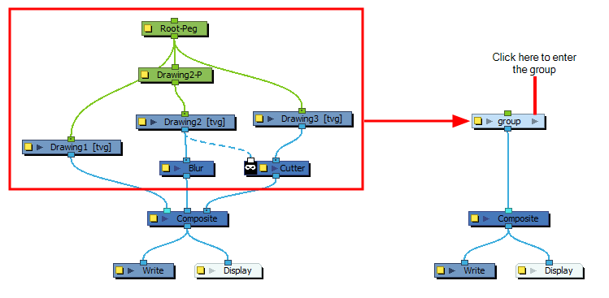
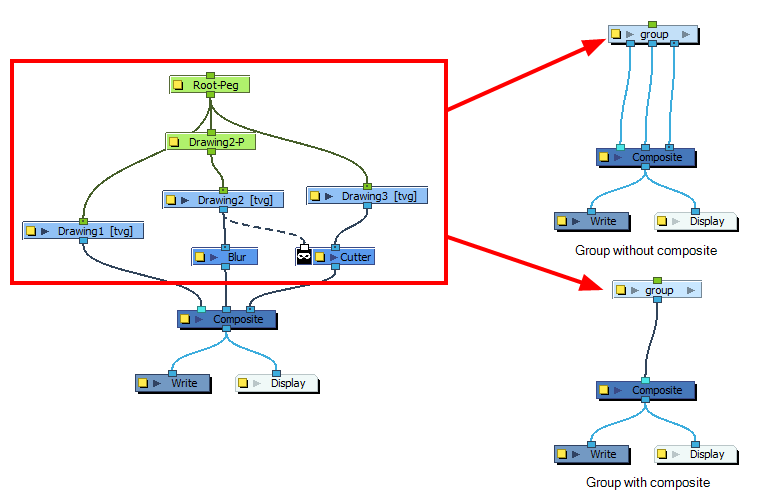

About
In this lesson, you are going to learn how to prepare your animated scenes, backgrounds and/or characters as templates. You will also learn how to export Master Templates and Action Templates.Lesson Duration: 1 hour
Topics:
Templates: When you want to reuse artwork and animation from your project in other scenes, you must create a template. A template can be seen as a portable scene or package that you can drag inside your project. A template is an individual copy of the artwork stored in the library which you can reuse in different scenes. Once a template is stored in the library, you can access it from any project.
Master Template: You can create a master template out of a cut-out puppet you created so you can reuse it throughout a single project or a full production. A cut-out character's master template stores the entire rig, structure, drawings, and keyframes of the different poses of your puppet into a single asset. Master templates are created from the Node view. The Timeline view and the Node view display different information about a scene and its structure. To make sure a character's main template, also called the master template, is rigged exactly the way it was meant to be when it's imported into a scene, it should be created with all the connections, effects, composites, nodes, pegs, groups, drawings, timings, as well as all the other information in the scene it was originally created in.
Because the Node view is the most faithful representation of a rig's structure, it is recommended to create master templates from the Node view rather than the Timeline view. Templates created from the Timeline view may lose the extra connections, effects and groupings that are visible in the Node view but which aren't properly connected to its main structure.
Action Templates: An action template, also known as animation template, is created from the Timeline view. This template allows you to reuse animations, key poses and part of an animation and contains mainly keyframes and drawing exposures. For example, you can reuse head positions or a leg animation from a walk-cycle and place them inside other animations. When it is extracted from the Timeline view, it loses the extra connections, effects, and groupings from the Node view. An action template is used with a master template. It cannot be used on its own since it does not contain all the information required to rebuild the puppet skeleton and advanced connections. The standard process is to first import the master template to the Node view or Timeline’s left side, and then slide the action template into the Timeline’s right side. This allows you to first build the skeleton and then give it the right pose.
Compositing: Compositing is the first step in animation post-production. This process involves rendering of your final animation by combining assets and scenes together. Compositing allows you to edit in additional adjustments, images, characters, songs, or layers, to create a more cohesive composition
Grouping: With so many connections and nodes possible, the Timeline and Node views can quickly become cluttered. You can use groups to keep your scenes organized.

When grouping nodes, you can choose to create a simple group, or a group with a composite. A simple group will simply help you organize your Node view, whereas a group with composite will connect all the nodes in your group to the same composite, and connect that composite to the outside of your group. This makes the group have a single outgoing connection for its composite, rather than one connection for each node that is connected to your scene's composite.

Hence, grouping nodes with a composite is a quick way of connecting several layers that need to be composited together to the same composite node. However, grouping nodes without a composite allows you to connect the layers inside the group to different parts of the Node view outside of the group, allowing you to preserve and tweak the stacking order of the group's content relative to the remainder of the scene if needed.
Using the Move to Parent Group command allows you to move the selected node to the parent level, maintaining all connections. If the operation cannot maintain the connections between the nodes, you will be notified and the operation will be terminated.
Export Animation as a movie: Using the Export Movie dialog, you can export your animation as a video file. By default, Harmony will export your entire scene in its full resolution. If you prefer, you can choose to export only a specific frame range in your scene, or to export in a smaller resolution, which can be useful if you need to save on time or disk space. Depending on the format in which you export your movie, you can also customize the video and audio compression settings for quality or for disk space.
Pivot point: Even with a complex hierarchy, a rig is useless without positioning the proper pivot points. This will allow the puppet's pieces to rotate correctly. The arm needs to rotate from the shoulder and stay attached to the torso, so its pivot point needs to be positioned accordingly. A good way to achieve this is to position the pivot point exactly in the center of the articulation. The initial position of the pivot point is always at the center of the scene. Sometimes there will not be an obvious place of rotation to place the pivot point, but it's a good idea to reposition the pivot to the best transformation point. For instance, the master peg, which generally controls the entire rig, is often best positioned between the character's feet.
Translate (Advanced Animation Toolbar): You can use the Translate tool to pan your elements on the X, Y and Z axes.
Task:
-
Launch Toon Boom Harmony.
-
In the Welcome Window, open your previous harmony file.
-
Take some time to investigate the construction of the Timeline layers and the Node View.
-
You will need to follow along with the video tutorials, but you do not need to submit your project.
-
Continue to take thorough notes on the lesson topics.
-
Before starting, you should review your notes from previous lessons.
- Watch and take notes on the Exporting Templates Part 1 video.
- Create thorough notes on the following:
- How to prepare your Harmony file to become a template,
- How to Group Nodes,
- How to Create a Peg for the Group,
- How to select and copy Node groups to be added into a library,
- How to use the Harmony library,
- How to create a folder and save templates on your computer,
- How to modify Scene Length,
- Generate Thumbnails in library for a template,
- How to create an Action Template,
- How to create keyframes for a Template,
- How to copy a Template and rename a template,
- How to create a Master template.